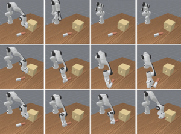
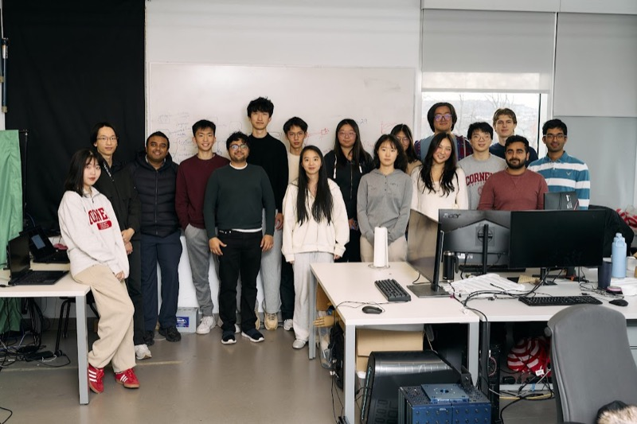
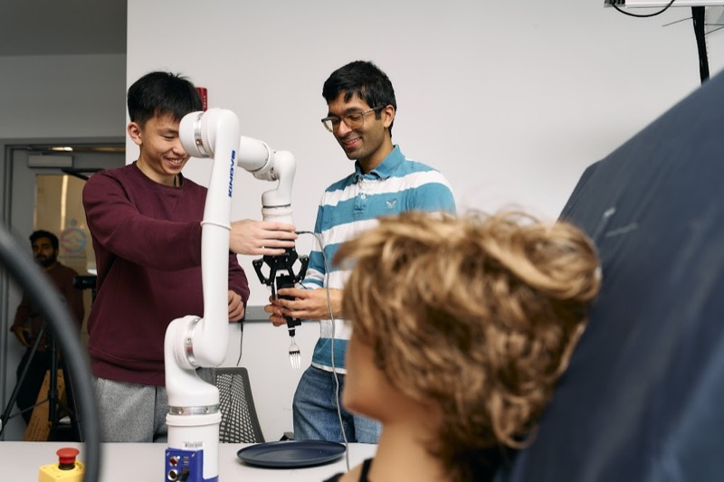

Research
My interests lie at the intersection of robotics and machine learning, specifically focusing on
post-deployment robot learning — how robots can recognize uncertainty, ask
for help when needed, and improve and learn continuously over their lifetime in real-world environments.
| A Human-in-the-loop Confidence-Aware Failure Recovery Framework for
Modular Robot Policies |
HRI 2026 |
| Quantifying Uncertainty in Modular Foundation Models: A Case Study in
Robot-Assisted Bite Acquisition |
HRI LBR 2026 (In Submission) |
| Multimodal Robotic Bite Acquisition with Vision-Language Models |
BURE Poster 2025 |
| Machine Learning-Based Electroencephalogram (EEG) Applications and its
Marketing |
JNN 2023 |
| EEG Machine Learning for Analysis of Mild Traumatic Brain Injury: A
survey |
arXiv 2022 |

Project
Generalizable Imitation Learning in ManiSkill2 (2025)
Research project on generalizable imitation learning using the ManiSkill2 simulation environment.
Technologies: Python, PyTorch, Reinforcement Learning, Imitation Learning

Project
AI-powered mathematics tutoring platform that provides personalized learning experiences. Features adaptive
difficulty, natural language interface, and comprehensive progress tracking for students of all levels.
Technologies: Python, Machine Learning, NLP, Educational Technology

Project
CAD Copilot for engineers, designers, and makers. A revolutionary startup that transforms how
professionals interact with CAD software through natural language commands and intelligent automation.
Technologies: AI/ML, CAD Integration, Computer Vision, NLP, Code Synthesis

Project
A generative ML framework that learns from 2D DXF blueprints to construct editable 3D CAD models in STEP
format in seconds.
Technologies: Python, PyTorch, Transformers, Synthetic Data Generation

Project
Implements a transformer-based model that generates parametric construction sequences from 3D CAD
models [S. Zhou, et. al., IJCAI 2023].
Technologies: Python, PyTorch, Transformers, Graph Neural Networks (DGL)

Project
A 2D diffusion simulation using MPI to accelerate scientific computation on HPC clusters.
Implements implicit Euler method with Conjugate Gradient solver.
Technologies: C++, MPI, High Performance Computing
Teaching
CS 4740/5740: Natural Language Processing
Spring 2026 • Teaching Assistant with Prof. Tanya Goyal
Teaching
CS 4787/5787: Large Scale Machine Learning
Fall 2025 • Teaching Assistant with Prof. Chris De Sa
Teaching Assistant for graduate-level course covering distributed machine learning, large-scale
optimization, and scalable ML systems.
Teaching
CS 4789/5789: Introduction to Reinforcement Learning
Spring 2025 • Teaching Assistant with Prof. Wen Sun
Teaching Assistant for graduate-level course covering Markov Decision Processes, planning and control,
value-based and policy-based learning, and reinforcement learning from human feedback for modern AI
applications.

EmPRISE Lab Group Photo
Group photo of the EmPRISE Lab team.

Robot Arm Testing
Testing robotic manipulation capabilities on bite acquisition in the lab.